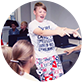
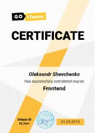
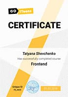
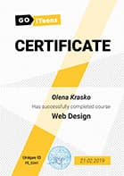

Ми пропонуємо стати частиною першої підліткової IT-спільноти

Чому саме ІТ?
ІТ-Фахівці - Сучасні Герої_
Роберт Даунi
Cтають улюбленими кіногероями завдяки міксу харизми і розуму
Марк Цукерберг
Об'єднують мільярди людей по всьому світу
Iлон Маск
Завойовують серця і змінюють консервативні індустрії
Стiв Джобс
Створюють продукти, після яких світ змінюється назавжди
підготуйте свою дитину до викликів швидкої сучасності_
Ми пропонуємо освітні, практичні програми за такими напрямками:
Smart Start
13-15 років
Створення веб-сайтів будь-якої складності. Вивчення HTML/CSS і JavaScript.
Game Dev
13-15 років
Розробка комп’ютерних ігор. Опанування мови C# і платформи Unity.
Digital Design
13-15 років
Графічний дизайн з нуля. Опанування UI/UX і створення власного графічного портфоліо.
GoStart Kids
11-12 років
Курс з основ програмування для молодших підлітків.
Пройдіть тест, щоб дізнатися який напрямок в IT підійде вашій дитині
Тест_
Ми створили тест, який визначить найбільш відповідний для вас курс, враховуючи особливості характеру і особистості. Всього 2 хвилини - і ви дізнаєтеся, яка професія в IT підійде саме для вашої дитини.
Три складових курсів goiteens_
1. Soft Skills
Під час навчання в ігровій формі підліток підвищує свої навички в спілкуванні з однолітками і старшими наставниками, вчиться працювати в команді за передовою технологією SCRUM, розвиває спритність, ерудицію, ораторську майстерність і в цілому емоційний інтелект і знаходить нових друзів.
2. Hard Skills
Навчання побудовано навколо освоєння IT-професії — комп'ютерного дизайну або веб-програмування. Заняття проводять практикуючі IT-фахівці, які передають найактуальніші знання і своїм прикладом надихають підлітків до реалізації власних проектів.
3. Real Project
Програма навчання максимальна практична, студенти виконують завдання — реальні проекти. Вони можуть розробляти дизайн або створити власний сайт в інтернеті з нуля. Зазвичай, батьки, які приходять на презентацію не вірять, що це зробила команда підлітків.
Формат навчання_
Дні навчання
Cубота або неділя
Одне заняття включає
3 години Tech Skills
+ 1 година Soft Skills або розмовна англійська
В місяць
16 навчальних годин — 2 500 грн
Викладачі_
Ярослав Вовченко
JavaScript Software Developer в SD Solutions
Досвід роботи JavaScript 2 роки
Більше 5 готов web-проектів
Навчить як правильно кодити і створювати односторінкові сайти використовуючи HTML/CSS.
Максим Норець
Front-end Developer
4 готових web-проектів
Навчить розробляти зручний інтерфейс користувача для сайту.
Софія Гордієнко
Двічі сертифікований тренер Soft Skills
Project Manager в “Brighta”
PO
Навчить застосовувати методологію Scrum і Agile в роботі над IT проектом.
Ярослав Вовченко
JavaScript Software Developer в SD Solutions
Досвід роботи JavaScript 2 роки
Більше 5 готов web-проектів
Навчить як правильно кодити і створювати односторінкові сайти використовуючи HTML/CSS.
Максим Норець
Front-end Developer
4 готових web-проектів
Навчить розробляти зручний інтерфейс користувача для сайту.
Софія Гордієнко
Двічі сертифікований тренер Soft Skills
Project Manager в “Brighta”
PO
Навчить застосовувати методологію Scrum і Agile в роботі над IT проектом.
сертифікат_
Після успішного складання командного проекту студенти GoITeens отримують сертифікат

відгуки_
Алексей Соколюк
Отличные курсы, все понятно рассказывают, учителя веселые, уроки проходят интересно и без затруднений.
Tema Galis
Я дуже радий, що навчаюся в Goiteens зі своєю класною групою. Курси від Goiteens допомогли / допомагають мені бути більш рішучим, винахідливим, відкритим до... (Читати далі)
Тарас Проць
Для мене курси програмування були чимось захмарним, незрозумілим. Як можна навчитись програмувати за півтора роки? Тому я до цих курсів відносився скептично, несерйозно. Але завдяки відмін... (Читати далі)
Tema Galis
Я дуже радий, що навчаюся в Goiteens зі своєю класною групою. Курси від Goiteens допомогли / допомагають мені бути більш рішучим, винахідливим, відкритим до... (Читати далі)